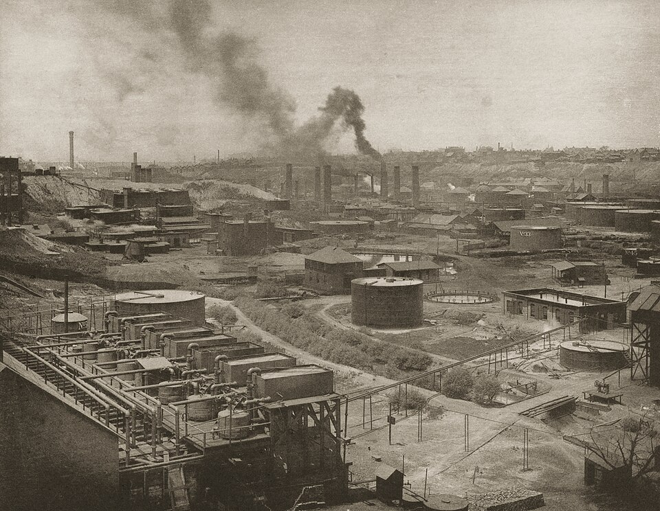

Die amerikanische Ölgesellschaft Standard Oil of New Jersey hat einen beispiellosen finanziellen Erfolg zu verzeichnen.[1] Wie die Washington Post berichtet, beläuft sich der Gewinn des Unternehmens mittlerweile auf eine Milliarde Dollar.[1] Dieser gigantische Ertrag wirft ein bezeichnendes Licht auf die wirtschaftliche Entwicklung des nordamerikanischen Petroleumriesen. Einst war der ursprüngliche Mutterkonzern durch ein Urteil des Obersten Bundesgerichts der Vereinigten Staaten zerschlagen worden.[1] Ein Kommentator der amerikanischen Hauptstadtpresse merkt nun an, es liege wohl nahe, dass ein großer Konzern offenbar nur vom Obersten Gerichtshof aufgelöst werden müsse, damit er auf dem Weltmarkt besonders erfolgreich werden könne.[1] Diese enorme Ertragskraft belegt, dass die Entflechtungsmaßnahmen der Vorkriegszeit die ökonomische Expansion der Nachfolgegesellschaften nicht drosseln konnten. Das aus dem Rockefeller-Imperium hervorgegangene Unternehmen hat seine globale Machtposition im Gegenteil noch weiter gefestigt.
Standard Oil: Milliardengewinn erzielt
Standard Oil of New Jersey meldet Rekordertrag — Ironie der staatlichen Konzernauflösung
Washington, 15. Mai.

Historische Einordnung
Standard Oil of New Jersey (die spätere Exxon) war die größte der 34 Nachfolgegesellschaften, die 1911 nach der Zerschlagung des Rockefeller-Monopols durch den US-Supreme Court entstanden. Entgegen den Absichten der Anti-Trust-Gesetzgebung florierten die Einzelunternehmen finanziell enorm. Das Unternehmen fusionierte 1999 mit Mobil Oil zum weltgrößten privaten Ölkonzern ExxonMobil.
Quellenverweise:
- The Washington Post (Internet Archive) 1926-05-15